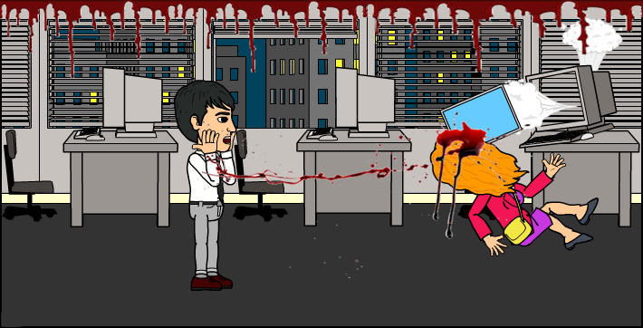
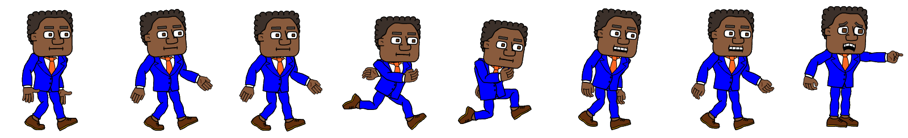

Employee Of The Month
Chapter 2: Death Arrives
Scene 4: The Witnessing
Daniel stands there. Shocked and Dont know what to do.
Oliver: Its the curse... Christine is the first to die!!
Its your entire fault! You approached her! shouted by Oliver who just entered.
Office work was suspended that day and every one was sent home.
 